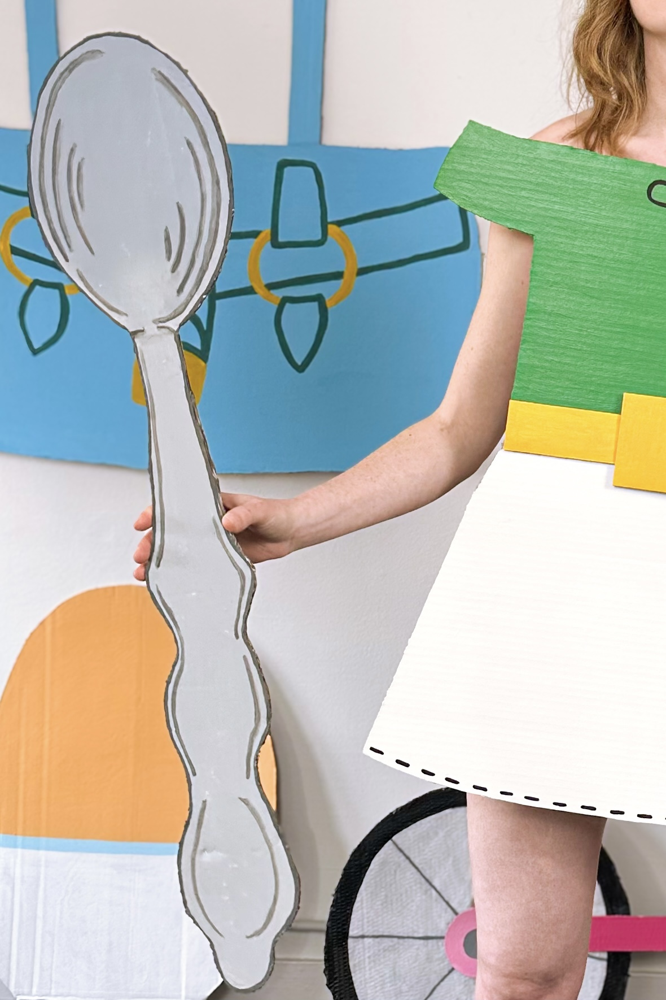
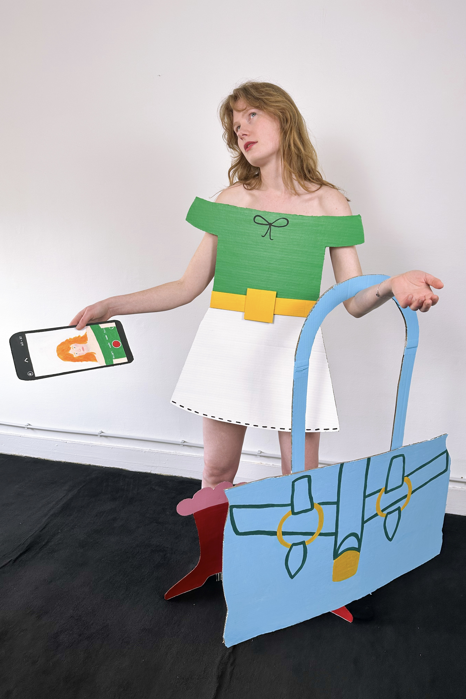
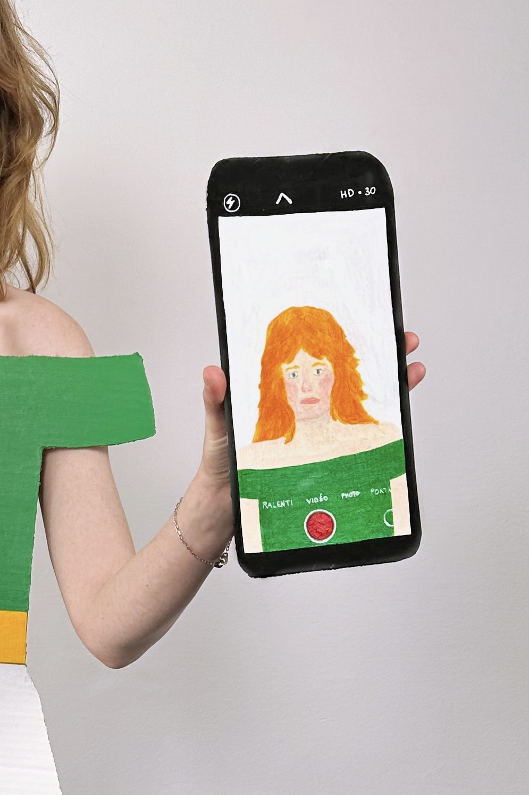
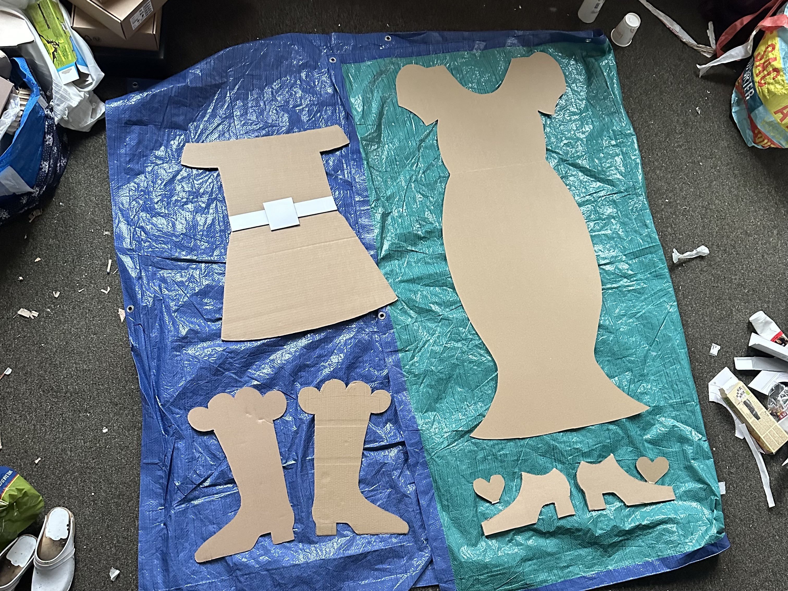
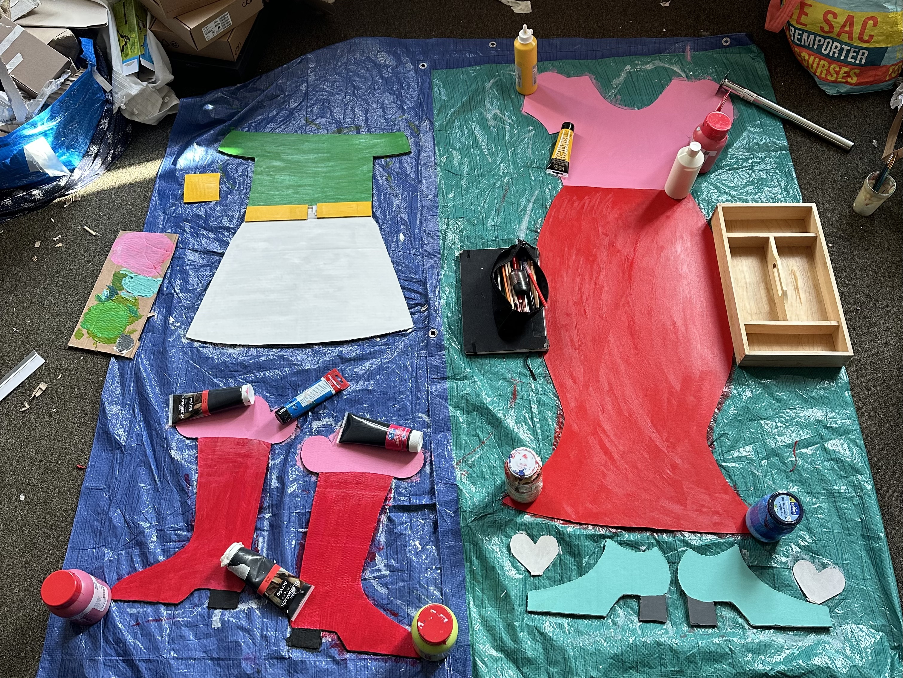

Experimenting with 2D shapes brought into a photoshoot and a stop-motion video. This is a first step towards broadening my exploration of shapes and forms, while continuing my work with colours and clothing. How do clothes change the way I see myself and the way others see me? Can I imagine all kinds of shapes, or are there limits? Can 2D create the illusion of 3D? And is my papier-mâché work doing the opposite using 3D forms to create the illusion of 2D? This series raises many questions and marks an important step in the ongoing development of my work.




